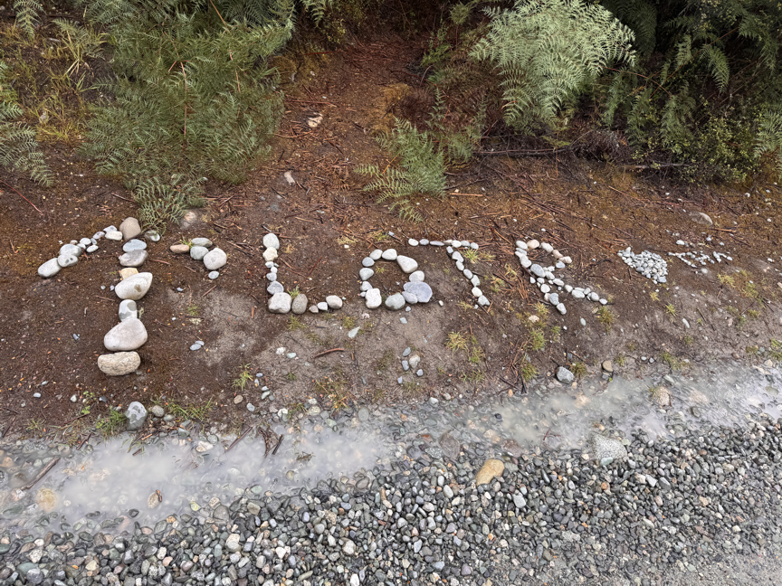
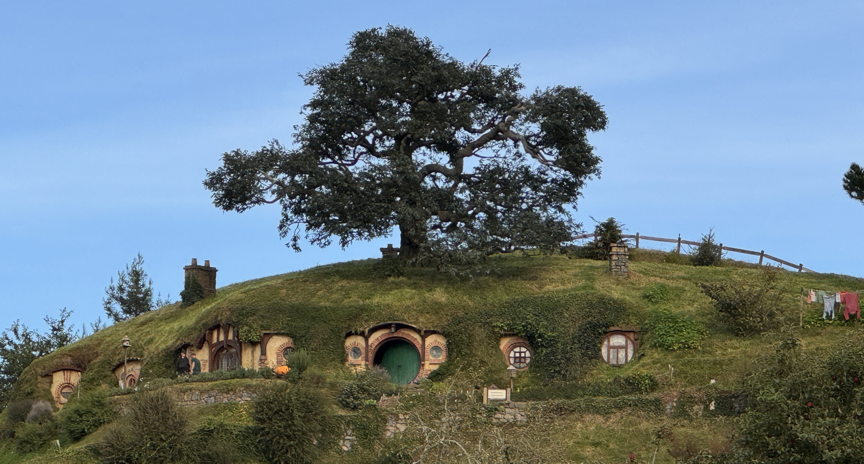
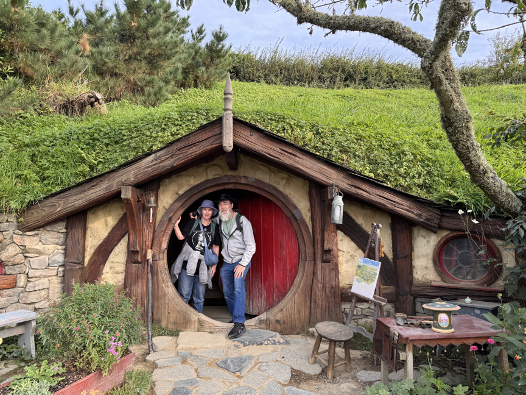
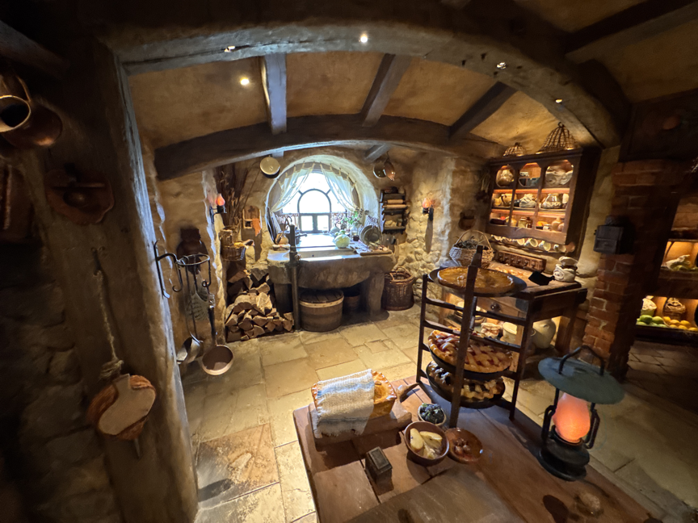
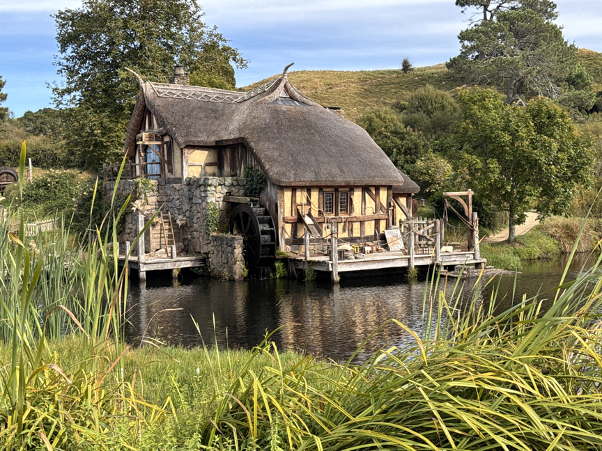
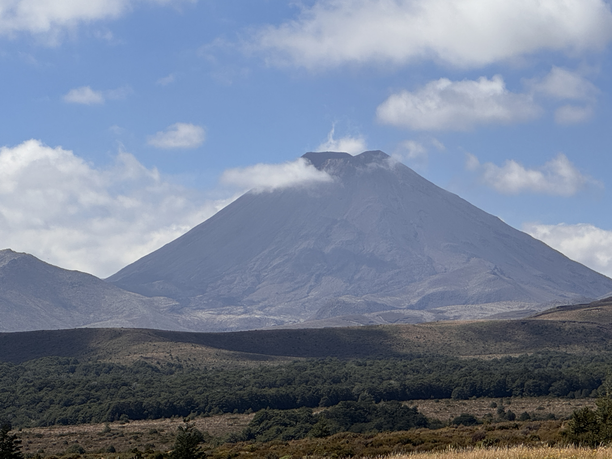
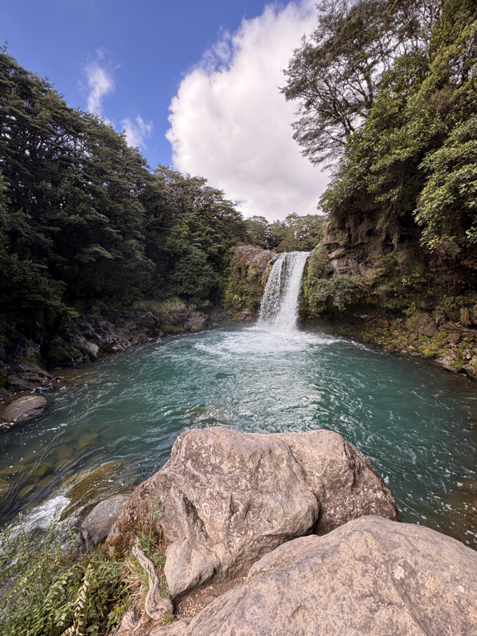

Lord of the Rings Filming Locations in New Zealand!
We visited the Wellington WETA Workshop 2nd day in the country.

Marc was our Tour guide. He worked in the movies in in CG for WETA for the last 25 years.
He was a number of Elves, and the first Black Rider in the Forest scene.

We viewed the Shire Forest location.


And the Anduin River

And Rivendell location

They forgot to shoot promotional photos, so brought Legolas here to pose.

and the Isengard location.

And WETA Shop:


Gollum

Got our T-Shirts
South Island Locations
Our first major site was Edoras (Mount Sunday) in the Canterbury Region.Near the end of a long dirt road (in good shape overall), then a 45 Minute walk to the top. It's hard to imagine building Meduseld there in the wind!


Just further beyond that location is where Aragorn viewed Helm's Deep. We didn't go to that site, but it was close!

Pelennor Fields was a little ambiguous after 26 years. Near Twizel.

Near Te Anau, there's a location of the Anduin River. A wooded cliff overlooking the river. The cliff was very undercut, so could collapse
at any time, held together by roots.
But there was a helpful sign along the road so we found the spot!


From Te Anau towards Queenstown, we visited a Department of Conservation site claiming to be Fangorn.
It was a beautiful, gnarly but we couldn't find where in the movie it was used.

We then went to the "Edge of Fangorn Forest" location, which we definitely found, and there was a tour group there who helped us find several more sites!


The View out from the location shows the mountains perfectly, if not snow-capped.


The next site was "The Silverlode", where the fellowship set off from Lothlorien. Mavora Lakes.
The actual site is down-river, but the view from the bridge in the park was terrific,
and the mountains in the background matched.


in the same park had where the fellowship broke up, Frodo hit behind a tree from Orcs, and launched the boat from the shore.


Hobbiton!
We booked the Second Breakfast tour, which is first of the day, so fewer people about, and a delicious feast around 11am.


a new feature at Hobbiton is the walk through Hobbit Hole. Fully furnished and amazing!

The Old Mill, where we had Second Breakfast

Smaug at the WETA Auckland:

Saw Weathertop from a distance (Privat land)

Picked up 2 of the One Ring at the Maker's (Jens Hansen) Shop.


Glimpsed Mt Doom the 5 minutes the clouds cleared for us:

Gollum's Pool:


Smaug at the Wellington Airport: